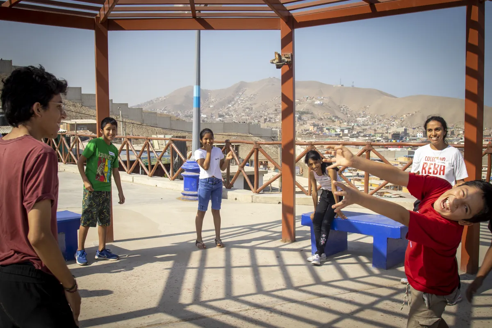
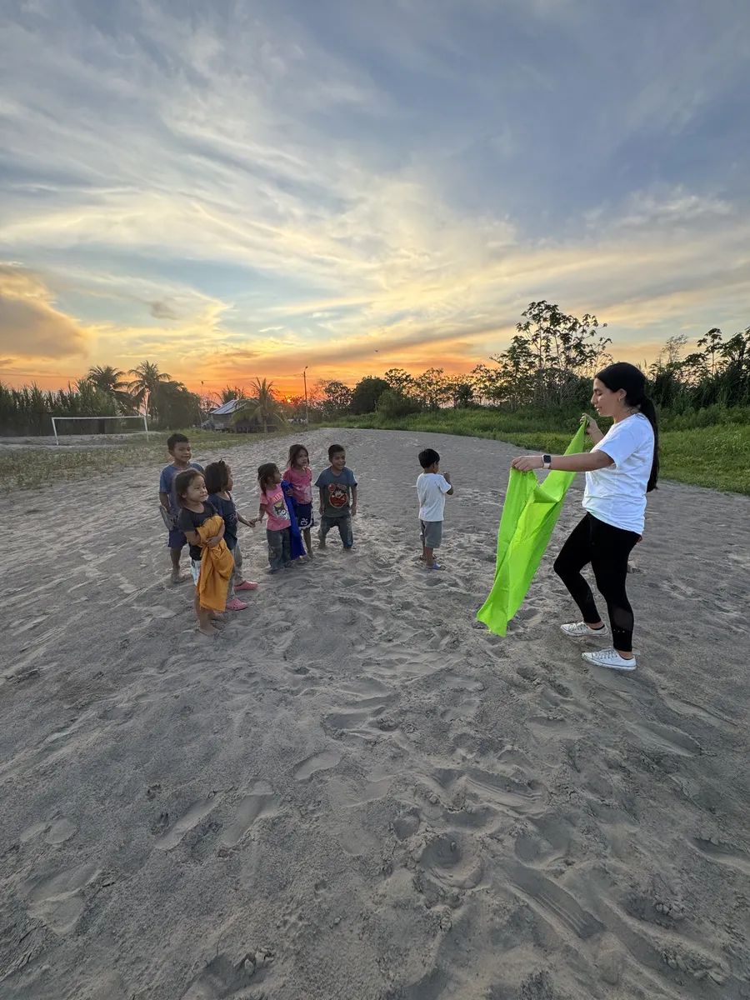
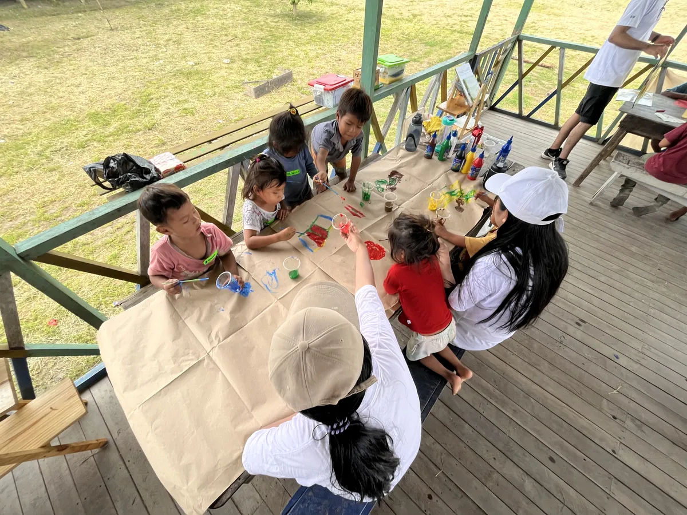
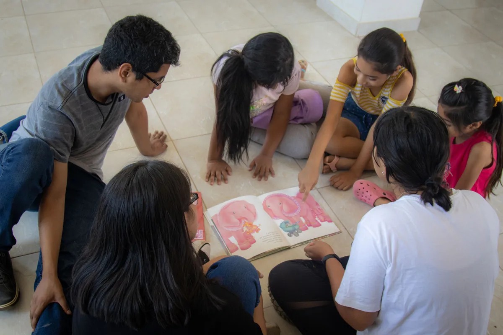
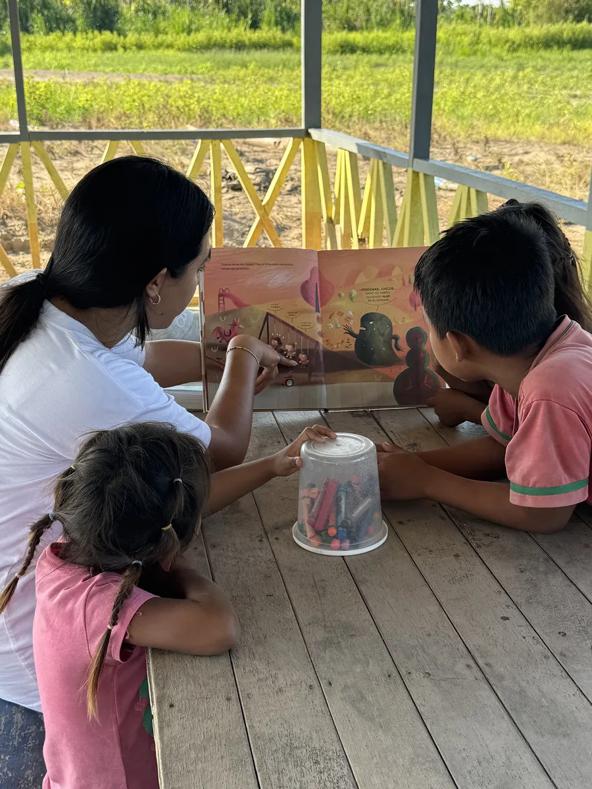

Compartimos aprendizajes
Somos una asociación sin fines de lucro peruana, iniciamos nuestras actividades en diciembre de 2012. Desde entonces, hemos desarrollado diversas experiencias de aprendizaje bajo el paradigma educativo socio constructivista para compartir con niñas, niños y adolescentes que viven en contextos complejos del Perú. Hemos compartido en Lima Metropolitana y la Provincia Constitucional del Callao, así como zonas rurales andinas y amazónicas del país.
A lo largo de los años, hemos evolucionado nuestras metodologías para compartir de maneras más significativas. Buscamos siempre crear formas colectivas de leer el mundo, a través de diversos lenguajes artísticos y pedagógicos, para construir aprendizajes trascendentes para la vida.
Compartimos aprendizajes con niñas, niños y adolescentes de contextos complejos del Perú desde la horizontalidad, colectividad y diversidad.
A través de intervenciones significativas construidas con las comunidades, sensibilizar sobre la importancia del ejercicio de los derechos culturales y del derecho a la educación para el desarrollo integral.



Desde el 2012 hemos compartido con niñas, niños y adolescentes de:



© 2025 Colectivo REBA | Todos los derechos reservados